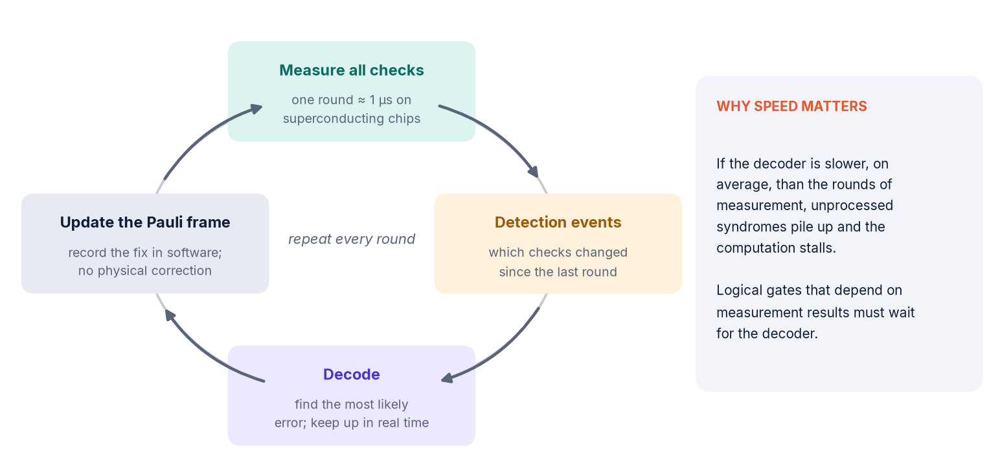
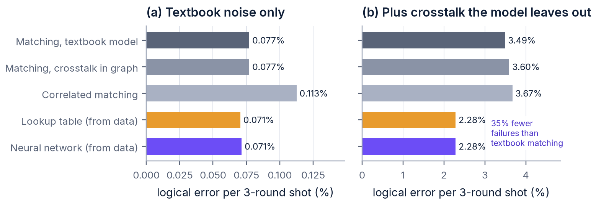

ในบทความนี้
- โจทย์ของบทนี้ — เลือก logical correction จากข้อมูลที่ไม่สมบูรณ์
- โมเดลของ noise — สิ่งที่ matching รู้ และสิ่งที่ข้อมูลสอนได้
- วงรอบของเครื่อง — throughput ไม่ใช่ latency
- ลงมือเขียน — syndrome เดียวกัน แต่ logical effect คนละแบบ
- อ่าน Lab 2 — ชนะ baseline แล้วก็ยังมี floor
- ออกแบบการทดลองถัดไป — ทดสอบ drift และ information loss
- Run & check — รันตัวอย่างด้วยตัวเอง
- Sources & scope — แหล่งอ้างอิงและขอบเขต
In this post
- The task: infer a logical correction from incomplete evidence
- The noise model: what matching assumes and data can teach
- The machine clock: throughput and latency are different
- Write the decoder: one syndrome, two logical effects
- Read Lab 2: a baseline win still leaves a floor
- Your experiment: test drift and information loss
- Run and check the example
- Sources and scope
โจทย์ของบทนี้ — เลือก logical correction จากข้อมูลที่ไม่สมบูรณ์
ดาวน์โหลดหนังสือและโค้ดประกอบ
ดาวน์โหลด Below Threshold ฉบับเต็ม (PDF ภาษาอังกฤษ · 104 หน้า · 5.4 MB)
อ่านบน Google Drive · ดาวน์โหลดตัวอย่าง Python ทั้งสิบบท (ZIP)
บทที่ 4/10 · บทเรียนดัดแปลงจาก Below Threshold: AI, Quantum Errors and Better Code ฉบับ 1.0 บทที่ 4 หน้า 21–29
บทที่ 3 ให้เราเห็นว่า syndrome บอกความไม่สอดคล้องของ parity checks แต่ไม่ได้บอก error ทุกตัวโดยตรง บทนี้เปลี่ยนมุมมองเป็นปัญหา inference: เมื่อเห็น detection events ชุด D เราควรปรับ logical state แบบใดจึงจะผิดน้อยที่สุด?
พื้นฐานที่ใช้คือ XOR, probability และ Python dictionaries เป้าหมายไม่ใช่สร้าง AlphaQubit บน laptop แต่เข้าใจว่า learned decoder ชนะได้เมื่อใด และเหตุใดแม้โมเดลที่ดีที่สุดก็ยังผิดได้ เราจะรัน lookup table ขนาดเล็ก อ่านผล Lab 2 จากหนังสือ และแยกสามเกณฑ์ที่ต้องวัด: logical failure rate, throughput และ latency
สำหรับ programmer ให้คิดว่า decoder เป็น service ที่รับ stream ของ checks แล้วตัดสินใจภายใต้ข้อจำกัดด้านเวลา การเพิ่มความแม่นยำมีประโยชน์ต่อระบบก็ต่อเมื่อ service ตามข้อมูลทันและตัดสินใจได้ก่อนส่วนถัดไปต้องใช้ผล
โมเดลของ noise — สิ่งที่ matching รู้ และสิ่งที่ข้อมูลสอนได้
Matching decoder สร้างกราฟจากแบบจำลอง faults แล้วหาคำอธิบายที่มีต้นทุนต่ำสำหรับ detection events ต้นทุนมักสัมพันธ์กับความน่าจะเป็นของ error วิธีนี้เร็วและเป็น baseline ที่แข็งแรง แต่ถ้า noise จริงมี leakage, crosstalk หรือ drift ที่โมเดลอธิบายไม่ครบ การตัดสินใจอาจลำเอียงอย่างเป็นระบบ
Learned decoder ประมาณ P(logical flip | D) จากตัวอย่างที่มี label โดยตรง ข้อมูลจึงอาจสอนความสัมพันธ์ที่กราฟแบบง่ายไม่ได้เก็บไว้ ขั้นแรกต้องนิยาม label ให้ตรงกับ logical observable ที่วัด ไม่ใช่พยายามทำนายทุก physical error เพราะ errors หลายแบบมี logical effect เดียวกันได้
งาน AlphaQubit เป็นตัวอย่างจริงของ recurrent neural decoding ที่ใช้ทั้ง simulated data และ processor data ส่วนใน tutorial นี้ lookup table ช่วยเปิดการตัดสินใจให้เห็นทุกแถว ซึ่งทำให้ตรวจเหตุผลได้ง่ายกว่าเริ่มด้วย neural network
อย่าสรุปว่า neural network จำเป็นเสมอไป ถ้าโมเดล noise ตรงและ matching แม่นอยู่แล้ว learning อาจเพิ่มเพียงต้นทุน ต้องเปรียบเทียบกับ baseline ที่ใช้ข้อมูลเดียวกันเสมอ
วงรอบของเครื่อง — throughput ไม่ใช่ latency


Throughput คือจำนวน rounds ที่ประมวลผลได้ต่อเวลา ถ้าเครื่องส่งข้อมูลเร็วกว่าที่ decoder รับไหว queue จะโตขึ้นเรื่อย ๆ ส่วน latency คือเวลาตั้งแต่รับข้อมูลจนคำตอบพร้อมใช้ ระบบที่ทำ pipeline อาจรับงานใหม่ได้ทุก microsecond แต่แต่ละงานรอผลนานกว่านั้นมาก
อย่านำเวลาต่อ shot จาก batch ขนาดใหญ่ไปเรียกว่าเวลา feedback บน hardware ในหนังสือ network ใช้ 0.57 µs ต่อ shot ใน batch บน laptop แต่ matching ใช้ 0.04 µs ตัวเลขนี้ยังไม่นับการรับผลวัด การส่งข้อมูล หรือ deadline ของ operation ถัดไป
AlphaQubit 2 ฉบับ preprint รายงานการ decode ต่ำกว่า 1 µs ต่อ cycle บน commercial accelerators ถึง surface-code distance 11 หนังสือระบุว่าการจับเวลาใช้ simulated streams และไม่รวม measurement/communication latency จึงควรอ่านว่าเป็นผลด้าน throughput ที่มีขอบเขตชัดเจน
สำหรับระบบจริงให้บันทึกทั้งอัตรารับเข้า เวลารอ queue และ latency ช่วงท้ายของ distribution ค่าเฉลี่ยดีเพียงค่าเดียวอาจซ่อน deadline ที่พลาดได้
ลงมือเขียน — syndrome เดียวกัน แต่ logical effect คนละแบบ
ตัวอย่างนี้ใช้ repetition code สามบิตเพื่อให้ไล่ทุกเหตุการณ์ได้ กำหนด syndrome เป็น (e₀ XOR e₁, e₁ XOR e₂) และ logical label เป็น e₀ ดังนั้น 001 กับ 110 ให้ syndrome (0, 1) เหมือนกัน แต่ label ตรงข้ามกัน
เราสร้าง training histogram สมมติและ deployment distribution แยกกัน ตัวเลขถูกกำหนดไว้โดยตั้งใจเพื่อสาธิต crosstalk-like correlations ไม่ใช่ข้อมูลจาก quantum processor จากนั้นเปรียบเทียบ minimum-weight rule กับการเลือก label ที่พบมากกว่าใน training histogram
"""Enumerated toy decoder: the same syndrome can hide opposite logical effects."""
from collections import defaultdict
from math import isclose
# Synthetic training histogram, not samples from a quantum processor.
training = {"000": 1800, "100": 40, "010": 40, "001": 40,
"110": 50, "101": 10, "011": 10, "111": 10}
# A separately specified deployment distribution, with the same ordering.
deployment = {"000": .895, "100": .020, "010": .020, "001": .020,
"110": .030, "101": .005, "011": .005, "111": .005}
def syndrome(error):
a, b, c = map(int, error)
return (a ^ b, b ^ c)
counts = defaultdict(lambda: [0, 0])
for error, count in training.items():
counts[syndrome(error)][int(error[0])] += count
learned = {s: int(n[1] > n[0]) for s, n in counts.items()}
# Minimum-weight correction: first-bit effect of the lightest error.
lightest = {}
for error in sorted(training, key=lambda e: (e.count("1"), e)):
lightest.setdefault(syndrome(error), int(error[0]))
def risk(decoder):
return sum(p for e, p in deployment.items()
if decoder[syndrome(e)] != int(e[0]))
assert isclose(sum(deployment.values()), 1)
assert syndrome("001") == syndrome("110") == (0, 1)
assert learned[(0, 1)] == 1 and lightest[(0, 1)] == 0
floor = sum(min(sum(p for e, p in deployment.items()
if syndrome(e) == s and int(e[0]) == y)
for y in (0, 1)) for s in counts)
# Drift may make the training-derived lookup worse than the deployment optimum.
assert risk(learned) >= floor - 1e-12
print("Ambiguous syndrome:", syndrome("001"))
print(f"Minimum-weight failure: {risk(lightest):.3%}")
print(f"Learned lookup failure: {risk(learned):.3%}")
print(f"Information-limited floor: {floor:.3%}")Ambiguous syndrome: (0, 1)
Minimum-weight failure: 4.500%
Learned lookup failure: 3.500%
Information-limited floor: 3.500%กฎ minimum weight ผิด 4.5% ส่วน lookup ผิด 3.5% lookup เลือก logical class ถูกกว่าเมื่อ pair error พบได้มากกว่า single error อย่างไรก็ตามข้อมูล syndrome แยกทั้งคู่ไม่ได้ จึงยังมี failure floor 3.5% การเพิ่มขนาด neural network ไม่สามารถสร้างข้อมูลที่ checks ไม่ได้เก็บมาให้ได้
อ่าน Lab 2 — ชนะ baseline แล้วก็ยังมี floor


ผลต่อไปนี้ บันทึกไว้ในหนังสือ ไม่ใช่ผลรันซ้ำจาก toy script ข้างบน Lab 2 จำลอง distance-3 surface-code memory สาม rounds ใช้ circuit noise p=0.1% และเพิ่ม correlated XX errors q=0.2% ต่อคู่ต่อ round ใน Device B แต่ละวิธีทดสอบกับสองล้าน fresh shots โดย learned methods เรียนจากอีกสองล้าน shots
| วิธี | Device A: textbook noise | Device B: เพิ่ม crosstalk |
|---|---|---|
| Textbook matching | 0.077% | 3.491% |
| Matching ที่เพิ่ม crosstalk ในกราฟ | 0.077% | 3.596% |
| Correlated matching | 0.113% | 3.671% |
| Lookup / neural network | ประมาณ 0.071% | ประมาณ 2.284% |
Device A มีช่องให้ปรับปรุงน้อย ส่วน Device B learned methods ลด failures ประมาณ 35% เทียบกับ textbook matching แต่การเพิ่ม crosstalk ลงกราฟไม่ได้ช่วย เพราะ parallel edges ใน representation นี้มี endpoints เดียวกันและ logical effects ต่างกัน การ merge จึงไม่เก็บความแตกต่างที่จำเป็นไว้ครบ
Lookup กับ network ให้ผลใกล้กันมาก แปลว่า representation ของข้อมูลมีความสำคัญกว่า architecture ที่ซับซ้อนในโจทย์เล็กนี้ แต่ไม่ได้พิสูจน์ว่า lookup จะขยายไปยัง code distance สูงได้
ออกแบบการทดลองถัดไป — ทดสอบ drift และ information loss
รัน python3 ch04.py แล้วลดความน่าจะเป็นของ 110 ใน deployment distribution พร้อมเพิ่ม 000 ให้ผลรวมยังเป็นหนึ่ง อย่าแก้ training histogram เป้าหมายคือหาจุดที่ lookup จากข้อมูลเก่าแพ้ minimum weight นี่คือ drift ในรูปที่ตรวจด้วยมือได้
Invariant ที่ต้องรักษา: 001 กับ 110 ให้ syndrome เดิมเสมอ และ failure rate ของ decoder ใดต้องไม่ต่ำกว่า Bayes floor สำหรับ deployment distribution นั้น อย่ากำหนด target ด้วยคำตอบในชุดทดสอบแล้วเรียกว่า trained performance
เมื่อไปทำระบบจริง แบ่ง training/validation/test ตามเวลาหรืออุปกรณ์ให้เหมาะกับสิ่งที่จะ deploy ตรวจ rare syndromes และ fallback แยกจาก cases ที่พบมาก และเก็บ matching baseline ไว้ หาก ambiguity floor สูงเกินเป้าหมาย ให้กลับไปแก้ hardware, schedule หรือ code design ตามบทถัดไป
Run & check — รันตัวอย่างด้วยตัวเอง
ตัวอย่างสำหรับสอนนี้ใช้ Python standard library เท่านั้น บันทึก ch04.py แล้วรันด้วย Python 3.10 ขึ้นไป โดย assertions ตรวจ invariant ที่อธิบายในบท
python3 ch04.pyตัวอย่างทั้งสิบบทและผลลัพธ์ที่คาดหวัง (ZIP) · อ่าน source บน GitHub
Sources & scope — แหล่งอ้างอิงและขอบเขต
เอกสารและหลักฐาน
โครงบท ภาพที่ให้เครดิต และผล lab ที่รายงานมาจากหนังสือของผู้เขียน ณ November 2026 ตัวอย่างสั้นที่ใช้ standard library รันเพื่อตรวจบทเรียนเว็บวันที่ 25 November 2026 เป็นแบบจำลองเพื่อสอน ไม่ได้รันซ้ำการทดลอง Stim, neural network, mitigation หรือ LLM ฉบับเต็มในหนังสือ ข้ออ้าง hardware, simulator, preprint และบริษัทคงขอบเขตตามที่ระบุ
- Anirach Mingkhwan. Below Threshold: AI, Quantum Errors and Better Code. Edition 1.0 (November 2026), Chapter 4, pp. 21–29.
- Bausch et al. Learning high-accuracy error decoding for quantum processors. Nature (2024).
- Senior et al. A scalable and real-time neural decoder for topological quantum codes. Preprint, v2 (2026).
- PyMatching documentation: Matching.add_edge and parallel-edge merge strategies.
The task: infer a logical correction from incomplete evidence
Download the book and examples
Download the complete Below Threshold book (English PDF · 104 pages · 5.4 MB)
Read on Google Drive · Download all ten Python examples (ZIP)
Chapter 4/10. A tutorial adaptation of Below Threshold: AI, Quantum Errors and Better Code, Edition 1.0, Chapter 4, pp. 21–29.
Chapter 3 showed that a syndrome reports disagreements between parity checks, rather than a complete list of errors. This chapter turns that observation into an inference problem: given detection events D, which logical correction makes the fewest wrong decisions?
You need XOR, conditional probability and Python dictionaries. Our goal is to understand when a learned decoder helps and why even the best possible decoder can still fail. We will run a tiny lookup decoder, interpret the book’s larger Lab 2, and separate three measurements that a deployment needs: logical failure rate, throughput and latency.
Think of the decoder as a service consuming a stream of checks. A more accurate decision is useful to the whole machine only when the service keeps up and returns the decision before a dependent operation needs it.
The noise model: what matching assumes and data can teach
A matching decoder builds a graph of possible faults and searches for a low-cost explanation of the observed detection events. Edge costs reflect assumed error probabilities. This is a strong, fast baseline. The problem arises when real leakage, crosstalk or drift violates the simplified model: the decoder can make a systematic mistake even while solving its graph problem correctly.
A learned decoder instead estimates P(logical flip | D) from labelled examples. It can learn correlations omitted by the graph representation. Define the target label carefully: predict the effect on the chosen logical observable, rather than demanding an exact reconstruction of every physical fault. Different physical errors can belong to the same logical class.
AlphaQubit demonstrates recurrent neural decoding with simulated and experimental training data. Our lookup table makes the same decision problem inspectable, row by row. It is a teaching model, rather than a reproduction of that architecture.
Learning adds no automatic benefit when the baseline already models the noise well. Always compare on the same evaluation distribution and retain the simpler decoder when it satisfies the engineering contract.
The machine clock: throughput and latency are different
Throughput measures how many rounds a decoder can process per unit time. If rounds arrive faster than the decoder can consume them, the queue keeps growing. Latency measures how long one decision takes to become available. A pipeline can accept a new item every microsecond while each item spends much longer inside it.
Do not relabel large-batch time per shot as hardware feedback latency. The book reports 0.57 µs per shot for its laptop network in large batches, versus 0.04 µs for matching. Neither number includes a processor’s measurement interface, communication delays or the deadline of a dependent operation.
The AlphaQubit 2 preprint reports decoding faster than 1 µs per cycle on commercial accelerators through surface-code distance 11. The book notes that timing uses simulated streams and excludes measurement and communication latency. Keep that scope attached to the claim.
For an implementation, log arrival rate, queue age and tail latency as well as the average service rate. A single favourable average can conceal missed deadlines.
Write the decoder: one syndrome, two logical effects
We use a three-bit repetition-code model so that every event is enumerable. Define the syndrome as (e₀ XOR e₁, e₁ XOR e₂), and the logical label as e₀. Errors 001 and 110 therefore produce the same syndrome (0, 1), with opposite labels.
The synthetic training histogram and the separately specified deployment distribution deliberately include a correlated pair error. These numbers are assumptions of the teaching model, not processor measurements. Compare a minimum-weight rule with a lookup rule choosing the more frequent training label.
"""Enumerated toy decoder: the same syndrome can hide opposite logical effects."""
from collections import defaultdict
from math import isclose
# Synthetic training histogram, not samples from a quantum processor.
training = {"000": 1800, "100": 40, "010": 40, "001": 40,
"110": 50, "101": 10, "011": 10, "111": 10}
# A separately specified deployment distribution, with the same ordering.
deployment = {"000": .895, "100": .020, "010": .020, "001": .020,
"110": .030, "101": .005, "011": .005, "111": .005}
def syndrome(error):
a, b, c = map(int, error)
return (a ^ b, b ^ c)
counts = defaultdict(lambda: [0, 0])
for error, count in training.items():
counts[syndrome(error)][int(error[0])] += count
learned = {s: int(n[1] > n[0]) for s, n in counts.items()}
# Minimum-weight correction: first-bit effect of the lightest error.
lightest = {}
for error in sorted(training, key=lambda e: (e.count("1"), e)):
lightest.setdefault(syndrome(error), int(error[0]))
def risk(decoder):
return sum(p for e, p in deployment.items()
if decoder[syndrome(e)] != int(e[0]))
assert isclose(sum(deployment.values()), 1)
assert syndrome("001") == syndrome("110") == (0, 1)
assert learned[(0, 1)] == 1 and lightest[(0, 1)] == 0
floor = sum(min(sum(p for e, p in deployment.items()
if syndrome(e) == s and int(e[0]) == y)
for y in (0, 1)) for s in counts)
# Drift may make the training-derived lookup worse than the deployment optimum.
assert risk(learned) >= floor - 1e-12
print("Ambiguous syndrome:", syndrome("001"))
print(f"Minimum-weight failure: {risk(lightest):.3%}")
print(f"Learned lookup failure: {risk(learned):.3%}")
print(f"Information-limited floor: {floor:.3%}")Ambiguous syndrome: (0, 1)
Minimum-weight failure: 4.500%
Learned lookup failure: 3.500%
Information-limited floor: 3.500%The minimum-weight rule fails 4.5% of the time; the lookup fails 3.5%. The lookup chooses the better logical class when the pair error is more likely than its single-error alternative. Yet syndrome ambiguity leaves a 3.5% information-limited floor. A bigger neural network cannot manufacture evidence that the checks never collected.
Read Lab 2: a baseline win still leaves a floor
These are results recorded in the book, not a rerun of the toy script. Lab 2 simulates a distance-3 surface-code memory for three rounds at circuit noise p=0.1%. Device B adds correlated XX faults with q=0.2% per neighbouring pair per round. Each decoder sees two million fresh test shots; learned methods use a separate two million training shots.
| Decoder | Device A: textbook noise | Device B: crosstalk added |
|---|---|---|
| Textbook matching | 0.077% | 3.491% |
| Matching with crosstalk in graph | 0.077% | 3.596% |
| Correlated matching | 0.113% | 3.671% |
| Lookup / neural network | about 0.071% | about 2.284% |
Device A leaves little room for improvement. On Device B, learned methods reduce failures by about 35% relative to textbook matching. Merely adding the crosstalk into this matching graph does not help: parallel edges share endpoints but carry opposing logical effects, and their merge loses a distinction needed by this example.
The network nearly matches the lookup table. For this small problem, the information representation matters more than a complicated architecture. That does not establish that a lookup table can scale to large code distances.
Your experiment: test drift and information loss
Run python3 ch04.py, then lower the deployment probability of 110, transferring the removed mass to 000. Keep the training histogram unchanged. Find the point where a lookup trained on yesterday’s ordering loses to minimum weight. This is a hand-checkable distribution-drift experiment.
Preserve two invariants: 001 and 110 always share their syndrome, and no decoder can beat the Bayes floor of the specified deployment distribution. Choosing labels from test answers would invalidate a claim of learned generalization.
For a real experiment, split training, validation and test data according to the time or device shift expected at deployment. Score unseen syndromes and fallback behaviour separately from frequent cases. Retain a matching baseline. If the ambiguity floor remains too high, change the hardware, schedule or code design; the next chapter examines those earlier insertion points.
Run and check the example
This complete teaching example uses only the Python standard library. Save ch04.py, then run it with Python 3.10 or later. Its assertions check the stated invariants.
python3 ch04.pyAll ten examples and expected output (ZIP) · Browse example source on GitHub
Sources and scope
Reading and evidence
The author’s book is the source of the chapter structure, credited diagrams and reported lab results (November 2026 snapshot). The short standard-library example above was executed for this web lesson on 25 November 2026. It is a teaching model; the book’s full Stim, neural-network, mitigation and LLM experiments were not rerun for these posts. Hardware, simulator, preprint and company claims retain their stated scope.
- Anirach Mingkhwan. Below Threshold: AI, Quantum Errors and Better Code. Edition 1.0 (November 2026), Chapter 4, pp. 21–29.
- Bausch et al. Learning high-accuracy error decoding for quantum processors. Nature (2024).
- Senior et al. A scalable and real-time neural decoder for topological quantum codes. Preprint, v2 (2026).
- PyMatching documentation: Matching.add_edge and parallel-edge merge strategies.